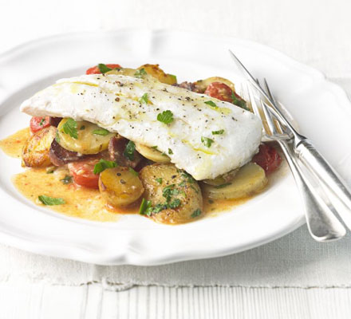
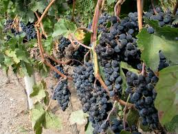
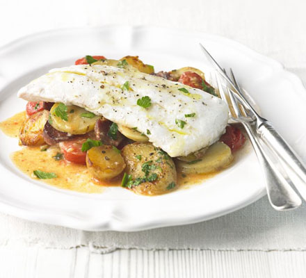
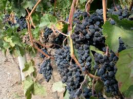
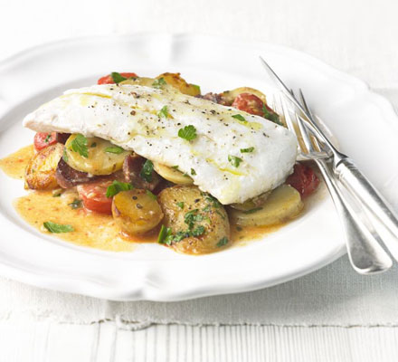
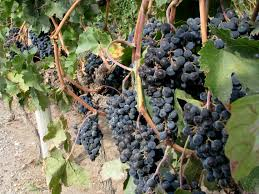

British Columbia Food and Drink
The cuisine of the province has long been enhanced by English traditions.
More recently, it has shown a pronounced Pacific Rim (particularly Asian) influence.
Specialities:
- The Pacific Ocean yields a great variety of seafood, including king crab, oysters,
shrimp and other shellfish, as well as cod, haddock and salmon (coho, spring, chum, sockeye and pink),
which is smoked, pan-fried, breaded, baked, canned or
barbecued, and complemented by local vegetables.
- Fruits grown in the province include apples, peaches, pears, plums, apricots,
strawberries, blackberries, the famous Bing cherries, cranberries and loganberries.
- Victoria creams, a famous chocolate delicacy derived from a recipe dating back to 1885,
are exported worldwide from British Columbia. The original confectioners shop, Rogers',
is situated in Victoria on Vancouver Island.
Regional drinks:
Red and white wines, sparkling wines and icewines are produced in the Okanagan
Valley, and several other regions have fledgling wine industries. All the usual alcoholic beverages are widely available.


Baked haddock
2 lbs. haddock fillets
2 cups sour cream or yogurt
1/2 cup mayonnaise
1 tsp. salt
1/2 tsp. ground black pepper
1/4 tsp. thyme
1/2 tsp. paprika
1 tsp. dill weed (fresh or dried)
Lemon wedges (for garnish)
Parsley sprigs (for garnish)
Preheat oven to 350 degrees F.
Place fish in buttered baking dish.
Combine sour cream, mayonnaise, and herbs, salt and pepper. Pour over fish and cover with dill.
Bake for 20-30 minutes, maybe less.
homemade red wine
5 punds concorde grapes
2 quarts water
2 pounds sugar
1 package wine yeast
Lightly crush grapes in a primary fermenting container.
Dissolve sugar in water and add to crushed grapes (called must).
Pour one pack of yeast into 2-3 ounces of water heated to 104 – 109 degrees F. Do not stir and let sit for
15 minutes only. Then stir to suspend yeast and add to must.
Note that you can use bread yeast, but your wine might taste like cider. Or you can also do it the old fashioned
way: take your chances and not add any yeast and let it ferment naturally.
Stir well and cover fermentor loosely.
Let ferment for 7 days, stirring twice daily.
After seven days, remove the pulp and siphon off the liquid through a course strainer into a secondary fermentor
a 5 gallon glass jug or one gallon glass containers) Leave some breathing room in these bottles. Any extra liquid should be kept for topping off when racking.
Top with a rubber bung and airlock. Or you can use the 70s way and put a balloon on top, secured with a rubber band or
good string. Put one pinhole in the balloon if using this method.
Let ferment 3-4 weeks then rack (siphon off, liquid leaving sediment behind) into clean secondary fermentor. Repeat airlock
or balloon method for another 4 - 6 weeks or until fermentation has stopped.
1Siphon off and bottle.
Age for one year.
 


